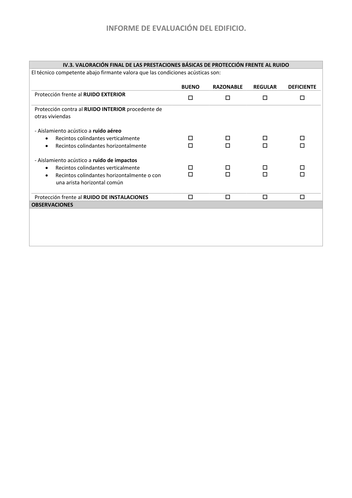

<!doctype html>
<html lang="es"><head><meta charset="utf-8">
<meta name="viewport" content="width=device-width, initial-scale=1">
<title>GUIA · p. 49 — Página 49</title><link rel="stylesheet" href="../estilo.css">
</head><body>
<nav><a href="../index.html">Índice</a> › <a href="../doc/guia-pdf-a5d4ef5252ba-2016-11-01-813669d3066c.html">GUIA</a> › p. 49</nav>

<header class="meta">
<p><strong>GUIA</strong> · Página 49 · versión 2016-11-01</p>
<p>SHA256: <code>813669d3066c0ff79457d57b80b0512a4fbb248bc5db1f7baf473c369a064738</code> · página física 49 de 65 · métodos de encabezado
solo si están cotejados.</p>
<p><a href="../doc/guia-pdf-a5d4ef5252ba-2016-11-01-813669d3066c.html">Documento</a> · <a href="guia-pdf-a5d4ef5252ba-2016-11-01-813669d3066c__p0048.html">← p. 48</a> · <a href="guia-pdf-a5d4ef5252ba-2016-11-01-813669d3066c__p0050.html">p. 50 →</a></p>
<p>Formatos: <a href="../../contenido/docs/GUIA-PDF-a5d4ef5252ba/2016-11-01__813669d3066c/pagina/p0049.md">Markdown</a> · <a href="../../contenido/docs/GUIA-PDF-a5d4ef5252ba/2016-11-01__813669d3066c/bloque/p0049.json">JSON de bloques</a> · <a href="../../contenido/docs/GUIA-PDF-a5d4ef5252ba/2016-11-01__813669d3066c/fuente.pdf#page=49">PDF p. 49</a> · <a href="../../contenido/docs/GUIA-PDF-a5d4ef5252ba/2016-11-01__813669d3066c/figura/p0049.png">imagen PNG</a></p>
</header>
<nav class="paginas"><a href="../doc/guia-pdf-a5d4ef5252ba-2016-11-01-813669d3066c.html">Documento</a> <a href="guia-pdf-a5d4ef5252ba-2016-11-01-813669d3066c__p0048.html">← p. 48</a> <a href="guia-pdf-a5d4ef5252ba-2016-11-01-813669d3066c__p0050.html">p. 50 →</a></nav>
<h2>Encabezado de la página</h2><ul><li>Sin encabezado de fuente cotejada en esta página.</li></ul>

<pre class="literal">INFORME DE EVALUACIÓN DEL EDIFICIO. 
 
 
IV.3. VALORACIÓN FINAL DE LAS PRESTACIONES BÁSICAS DE PROTECCIÓN FRENTE AL RUIDO 
El técnico competente abajo firmante valora que las condiciones acústicas son: 
 
 
BUENO 
RAZONABLE 
REGULAR 
DEFICIENTE 
Protección frente al RUIDO EXTERIOR 
 
 
 
 
 
Protección contra al RUIDO INTERIOR procedente de 
otras viviendas 
 
 
 
 
 
 
 
 
 
- Aislamiento acústico a ruido aéreo 
 
 
 
 
• 
Recintos colindantes verticalmente 
 
 
 
 
• 
Recintos colindantes horizontalmente 
 
 
 
 
 
 
 
 
 
- Aislamiento acústico a ruido de impactos 
 
 
 
 
• 
Recintos colindantes verticalmente  
 
 
 
 
• 
Recintos colindantes horizontalmente o con 
una arista horizontal común 
 




Protección frente al RUIDO DE INSTALACIONES 




OBSERVACIONES 
 
 
 
 
 
 
</pre>
<figure><a href="../../contenido/docs/GUIA-PDF-a5d4ef5252ba/2016-11-01__813669d3066c/figura/p0049.png"></a><figcaption>Imagen de la página 49 (PNG ya extraído; prevalece sobre fórmulas).</figcaption></figure>
<h2>Tablas candidatas de esta página</h2><ul><li><a href="../../contenido/docs/GUIA-PDF-a5d4ef5252ba/2016-11-01__813669d3066c/tabla/p0049_t01.json">p0049_t01.json</a> · <a href="../../contenido/docs/GUIA-PDF-a5d4ef5252ba/2016-11-01__813669d3066c/tabla/p0049_t01.csv">.csv</a> (4 × 3; candidata, no reconstruida aquí)</li></ul>
<h2>Referencias, notas y excepciones (página y vecinas)</h2><ul><li>Sin referencias o notas separadas en el JSON.</li></ul>
<h2>Apartados que incluyen esta página</h2><ul><li><a href="../apartado/guia-pdf-a5d4ef5252ba-2016-11-01-813669d3066c__a0033.html">ID a0033 · INFORME DE EVALUACIÓN DEL EDIFICIO.</a></li></ul>

<footer>Generado estáticamente desde JSON normalizado; sin JavaScript ni servicios externos.
El JSON es la fuente; este HTML es caché reproducible.</footer>
</body></html>
